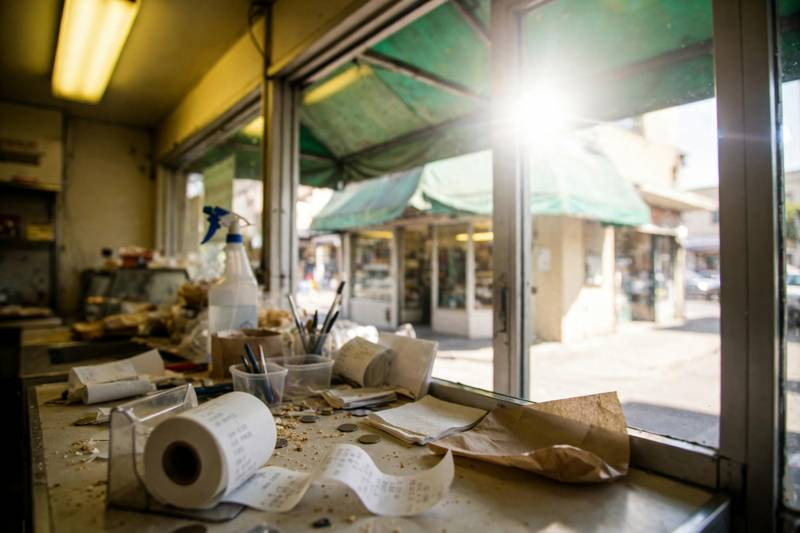
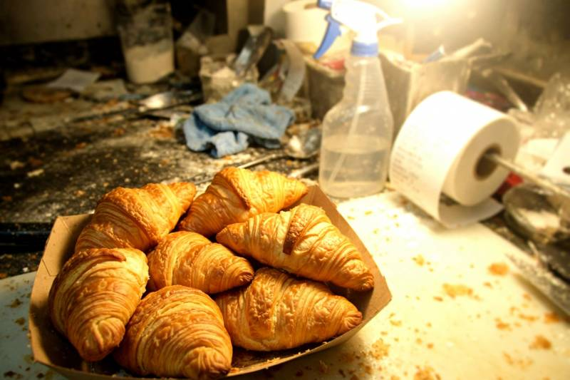
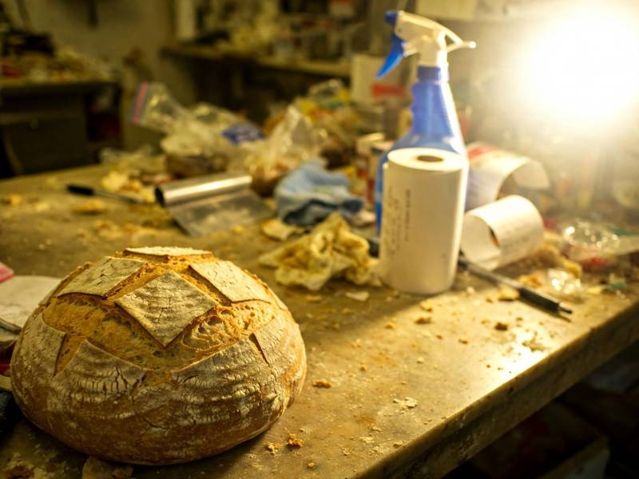
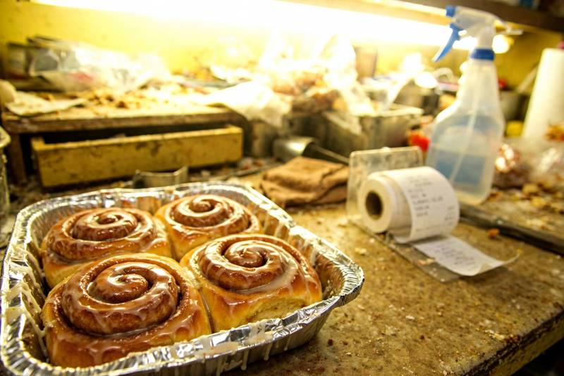
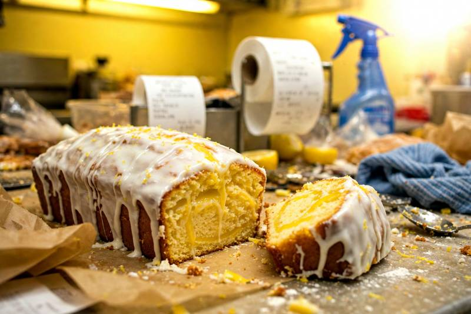

We are a family bakery in the Riverside neighbourhood. My mum Jean started baking here in 1987 and we still make everything by hand every morning from 5am. All our bread is naturally leavened sourdough using a starter that is older than my kids (literally!!). We use local flour from Hollow Creek Mill and butter from Pell Farm dairy.
 Butter Croissants 3 day laminated dough, real butter. $3.75 each / 6 for $20 |
 Country Sourdough Our famous loaf, 36 hour ferment. $9 |
 Cinnamon Buns Saturdays only, they go fast!! $4.50 |
 Lemon Drizzle Loaf Jean's recipe. Whole loaf or by the slice. $18 loaf / $3.50 slice |
Tues - Fri 7am - 3pm
Sat 7am - 2pm
Sun 8am - 12pm (NEW!)
Closed Mondays
Find us at 22 Marigold Lane, Riverside. Street parking out front.
Call 555-0142 to order cakes. Please give us 48 hours notice for celebration cakes. We can do gluten free bread on Fridays only if you order by Wednesday. Sorry no vegan croissants yet!
We do wedding cakes, please call for a quote. Delivery within 5 miles for orders over $40.
"Best croissants in Riverside, I come every Saturday" - Dave M.
"The lemon loaf is my mum's favourite" - Priya
Follow us on facebook!